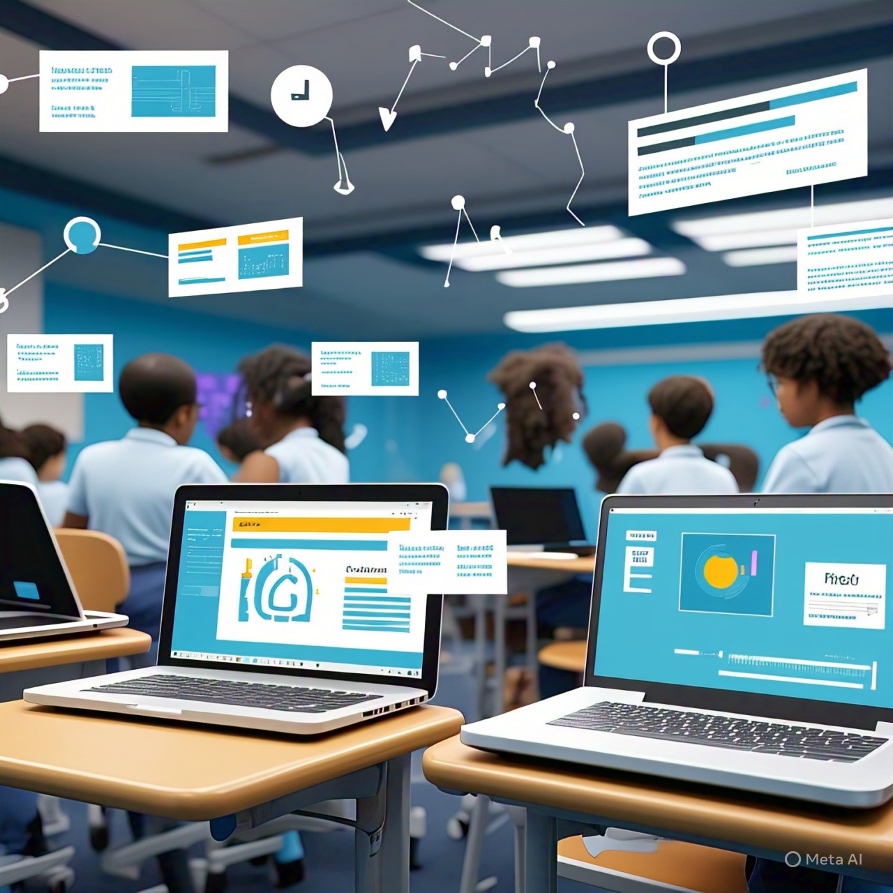

Evaluación y Seguimiento con Herramientas Tecnológicas

1. Evaluaciones en línea
- Pruebas automatizadas: Creación eficiente de evaluaciones con diferentes tipos de preguntas. Corrección automática que facilita el trabajo docente.
- Retroalimentación inmediata: Los estudiantes reciben respuestas instantáneas, favoreciendo el aprendizaje reflexivo.
- Personalización: Las plataformas adaptan las pruebas al nivel y necesidades de cada estudiante.
2. Análisis de datos
- Herramientas analíticas: Uso de sistemas LMS y Google Analytics para analizar desempeño y participación.
- Informes detallados: Progreso individual y grupal para enfocar refuerzos donde se necesiten.
- Intervenciones personalizadas: Diseño de estrategias de apoyo para estudiantes con dificultades específicas.
3. Seguimiento del progreso
- Portafolios digitales: Recopilación de trabajos para una evaluación integral del estudiante.
- Rúbricas digitales: Criterios claros y accesibles que guían tanto la evaluación como el aprendizaje.
4. Gamificación en evaluaciones
Integrar dinámicas de juego mediante plataformas como Kahoot o Quizizz para aumentar la motivación y el compromiso de los estudiantes.
5. Comunicación constante
Utilización de foros y plataformas de mensajería para resolver dudas y reforzar conceptos evaluados de manera inmediata.
6. Formación docente sobre evaluación digital
Capacitación especializada para interpretar datos analíticos y aplicar estrategias de evaluación innovadoras mediante herramientas tecnológicas.